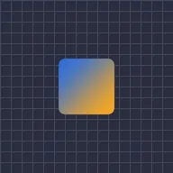

Bantuan Skala

Menambahkan skala ekstra di atas ukuran lapisan itu sendiri sepanjang X, Y, keduanya, atau X dengan Y berlawanan arah. Lapisan yang menjadi anaknya mengikuti ukuran baru.
Bantuan Skala menambahkan skala ekstra di atas ukuran lapisan itu sendiri. Lapisan yang memiliki lapisan ini sebagai induknya mengikuti ukuran baru.
- Sumbu: X meregangkan lebar, Y tinggi, dan X,Y keduanya. X,-Y (default) meregangkan lebar sementara tinggi menyusut, untuk squash and stretch.
- Skala adalah skala ekstra: 100 % tidak mengubah apa-apa.
- Redaman (hanya untuk X,Y dan X,-Y) menyesuaikan tinggi. Dengan X,Y tinggi diskalakan sebesar Skala kali Redaman; dengan X,-Y tinggi menyusut sebanyak Redaman kali pertambahan lebar.
Pengaturan
| Pengaturan | Jenis | Rentang | Default |
|---|---|---|---|
| Sumbu | Pilihan | X, Y, X,Y, X,-Y | X,-Y |
| Skala | Angka | 0% hingga 10000% | 100% |
| Redaman | Angka | 0% hingga 10000% | 100% |